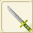
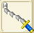
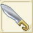

| 剣作成 | ||||
| 画像 | 日本語表示 | 性能 | 材料 | |
| 台湾名 | ||||
| 剣作成Lv1 | ||||
| ロングソード | ATK+12〜+24 | 銅4、バルサ20 | ||
| 長劍 | ||||
| ブロードソード | ATK+18〜+36 | 銅4、鉄3、バルサ20 | ||
| 闊劍 | ||||
| 剣作成Lv2 | ||||
| フェンシングフォイル | ATK+24〜+48 | 銅5、鉄4、バルサ20 | ||
| 突刺劍 | ||||
| フランベルジュ | ATK+30〜+60 | 銅7、鉄5、モミ20 イエローメランチ20 | ||
| 火舌劍 | ||||
| 剣作成Lv3 | ||||
| ワルーンソード | ATK+36〜+72 | 銅7 鉄6 銀5 | ||
| ?包劍 | ||||
| トゥハンドソード | ATK+42〜+84 | 鉄10 銀8、モミ20 ツガ20 | ||
| 雙手劍 | ||||
| 剣作成Lv4 | ||||
| カダラ | ATK+48〜+96 | 銅15 鉄5 純銀5、イエローメランチ20 | ||
| 雙刃長劍 | ||||
| チャーク | ATK+54〜+108 | 鉄10 純銀7 金5、イエローメランチ20 | ||
| 鎖刃劍 | ||||
| クイーンブレス | RCV+2〜+5 CRI-1〜+1 CTR-1〜+1 HIT-1〜+1 AVD-1〜+1 クエストで使用 |
純銀5 銀1 金1、チタン鉱石20、 フローズンアイリス20 |
||
| 剣作成Lv5 | ||||
| アネラス | ATK+60〜+120 | 鉄10 銀3 純銀6 金7、ツガ20 | ||
| 格鬥劍 | ||||
| ツヴァイハンダー | ATK+66〜+132 | 銅10 鉄8 銀7 金8、アカマツ20 | ||
| 長鍔劍 | ||||
|  | 黒作太刀 | ATK+94〜134 AGL+1〜5 HIT+2 AVD+1 |
アカマツ20 金7 アルマイト7 鉄10 銅10 |
|
| �K作太刀 | ||||
| 剣作成Lv6 | ||||
| ボアースピアーソード | ATK+72〜+144 | 銀10 純銀10 白金8 ツガ20 ヒバ20 |
||
| 豬牙劍 | ||||
| アキナケス | ATK+78〜+156 | 純銀6 金10 白金10 ヒバ20 ホオノキ20 |
||
| 雙刃闊劍 | ||||
| 剣作成Lv7 | ||||
| バスタードソード | ATK+84〜+168 HIT+10 AVD-5 |
純銀15 白金10 ミスリル鋼7 アカマツ20 マイティナイト1 |
||
| 巨劍 | ||||
| シンクレアサーベル | ATK+90〜+180 | 銀10 金13 ミスリル鋼11 バルサ20 ホオノキ20 |
||
| 長軍刀 | ||||
| 水龍の剣 | ATK+208 AGL+5 HIT+2 AVD+2 |
ミスリル鋼20 マイティナイト2 魔族のクリスタル2 錆びた剣1 |
||
| 水龍之劍 | ||||
| 剣作成Lv8 | ||||
| マインドツイスト | ATK+220〜+233 DEF-50 FP-200 |
銅15 白金16 ミスリル鋼13 スギ20 魔族のクリスタル1 |
||
| 護身短劍 | ||||
| コリシュマルド | ATK+153〜+204 | ミスリル鋼10 ミスリル銀13 モミ20 アカマツ20 スギ20 |
||
| 細柄短劍 | ||||
| シンクレアサーベル＋ | ATK+?〜+180 CRI+? |
ミスリル鋼18 ミスリル銀18 スギ20 永久氷石20 ブルードラゴンの鱗20 |
||
| 長軍刀+ | ||||
| 剣作成Lv9 | ||||
| メルパッターデモー | ATK+171〜+228 | 鉄10 白金10 ミスリル鋼10 ミスリル銀10 ヒノキ20 |
||
| 細刃重劍 | ||||
| ダマスカスソード | ATK+184 連激消費FP20%減 |
純銀10 ミスリル銀10 レグネシウム10 ヒバ20 マイティナイト2 |
||
| 剛硬巨劍 | ||||
| 剣作成Lv10 | ||||
| 青龍刀 | ATK+180〜+240 | 金10 ミスリル銀10 レグネシウム10 スギ20 トネリコ20 |
||
| 青龍刀 | ||||
| ロードソード | ATK+248 AGL+1 HIT+1 AVD+1 |
ミスリル銀10 オリハルコン10 ヒノキ20 マイティナイト2 魔族のクリスタル2 |
||
| 曲刀 | ||||
| 剣作成Lv11 | ||||
|  | ビナーシール | ATK+263〜287 RCV+11 HIT+6 |
ヒノキ40 トネリコ40 ダマスクス鉱5 レグネシウム4 マイティナイト2 |
|
| 彎勾劍 | ||||
|  | 剛毅 | ATK+323〜346 AVD+23 |
トネリコ40 ダマスクス鉱5 ミスリル銀5 レグネシウム5 魔族のクリスタル2 |
|
| 剛毅 | ||||